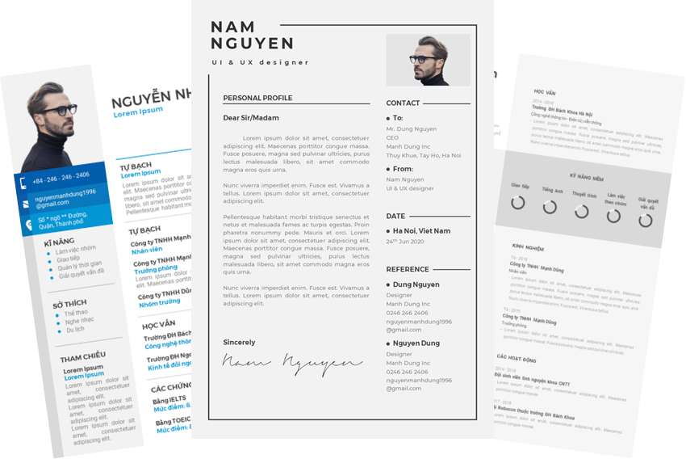

1. Thông tin cá nhân:
- Nên:
- Họ tên: Dùng tên thật và ghi đầy đủ cả họ lẫn tên đệm. Nếu bạn có một chiếc tên nước ngoài thì có thể dùng luôn nhé.
- Ảnh đại diện: Ảnh chân dung nghiêm túc với hậu cảnh đơn giản. Nếu như bạn không chọn được một ảnh đại diện ưng ý thì có thể như mình, bỏ luôn ảnh đi - nhưng mặc dù vậy, mình vẫn khuyến khích bạn có ảnh đại diện trên CV nhé :v
- Thông tin liên lạc: Ghi rõ Số điện thoại, địa chỉ Email, tài khoản LinkedIn (nếu có) và nên ghi cả Địa chỉ hiện tại lẫn Năm sinh.
- Vị trí ứng tuyển: Cần ghi ngắn gọn đúng trọng tâm thôi: “Thiết kế, Lập trình Web,…” hoặc đầy đủ hơn thì ghi rõ: “Ứng tuyển vị trí: ...”
- Không nên:
- Ghi biệt danh; biệt hiệu kiểu như Thu Paris, Trà Hoa Kỳ.
- Ảnh đại diện mờ; nhòe hoặc có nhiều người trong ảnh; thiếu nghiêm túc.
- Dùng tài khoản mail có tên thiếu chuyên nghiệp như rongnuoc69; chubeloatchoat ... Hãy cố gắng tạo mới một tài khoản gần với tên trên CV của bạn nhất.
2. Mục tiêu nghề nghiệp:
- Nên:
- Trong vòng từ 3 đến 5 dòng, bạn hay ghi thật ngắn gọn và cô đọng nhất bạn định làm gì, bạn mong muốn gì khi làm việc ở vị trí bạn ứng tuyển.
- Ví dụ bạn ứng tuyển vị trí Thiết kế Website thì có thể ghi Mục tiêu ngắn hạn là: “Sáng tạo được nhiều theme; website, landing page... với phong cách gọn gàng; hiện đại, đáp ứng nhu cầu đa dạng của khách hàng”. Còn với mục tiêu dài hạn thì có thể ghi là: “Muốn khám phá và phát triển thêm về mảng Ui/Ux nhiều hơn nữa để nâng cao trải nghiệm khách hàng ...”
3. Kinh nghiệm làm việc, các hoạt động ngoại khóa:
- Nên:
- Tất cả những kinh nghiệm bạn đã tích lũy được tính từ thời điểm bạn học đại học; sau khi ra trường… cho đến khi ứng tuyển, miễn sao chúng ít nhiều có liên quan đến công việc mình ứng tuyển.
- Hãy ghi rõ mốc thời gian làm việc, tên công ty / tổ chức đó là gì, ví trị công việc bạn từng làm việc, các sản phẩm thực tế (nếu có), những việc bạn đã làm / đã tích lũy được kinh nghiệm trong thời gian công tác tại đó.
- Nếu bạn là sinh viên, chưa có kinh nghiệm làm việc thì cố gắng ghi nhiều nhiều chút những gì bạn tích lũy được qua các hoạt động ngoại khóa, các tổ chức từng tham gia ... Nó sẽ giúp nhà tuyển dụng biết bạn là người năng động, nhiệu tình như thế nào.
4. Học vấn, chứng chỉ:
- Nên:
- Ghi kèm mốc thời gian trường, chuyên ngành mà bạn đã từng theo học.
- Ghi thêm cả những giải thưởng, thành tích, thành tựu đạt được trong quá trình theo học. Đặc biệt là các đồ án, công trình nghiên cứu khoa học, quá trình thực tập (mà có liên quan đến công việc bạn đang ứng tuyển). Ngoài ra bạn có thể ghi thêm tên trường cấp 3 nếu CV đang hơi ngắn và có ít thông tin.
- Ghi rõ mức điểm bạn đạt được khi thi IELTS; TOEIC; TOEFL được bao điểm này, các chứng chỉ ngoại ngữ khác (nếu có) và ở hạng nào, hay là những chứng chỉ về tin học như IC3; Mos…
- Không nên:
- Ghi cả tên trường cấp 1, cấp 2.
- Thể hiện quá nhiều những thành tích mà không liên quan đến công việc.
5. Một số lưu ý khác:
- Sau khi bạn đã hoàn thành nội dung CV rồi thì nhớ kiểm tra
giúp mình thêm một vài công việc sau nhé:
- Kiểm tra lại lỗi chính tả trên CV một lượt. CV có thể ít thông tin nhưng không thể không chỉn chu được, nhớ kỹ!
- Lưu file dưới định dạng PDF, kiểm tra lại tên file đã ghi đúng chưa.
- Kiểm tra Email đúng Người nhận chưa, đã ghi tiêu đề chưa, đã đính kèm file chưa.
Đây là chiếc CV mà mình đã dùng để đi phỏng vấn vào công ty hiện tại, bạn có thể tải về và xem qua cách trình bày của mình tại đây
Chúc cho CV của các bạn lọt vào mắt xanh của nhà tuyển dụng ngay lần "gặp gỡ" đầu tiên nha. Và nếu bài viết của mình có chỗ nào chưa ổn thì bạn cứ gửi tin nhắn cho mình để chia sẻ thẳng thắn quan điểm của bạn nhé :>
Cảm ơn bạn đã đọc bài viết của mình ^^